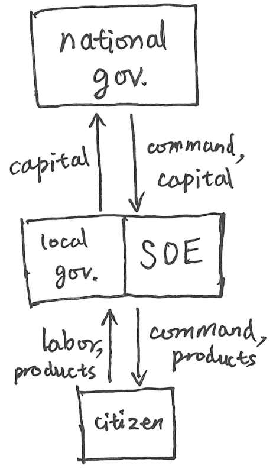
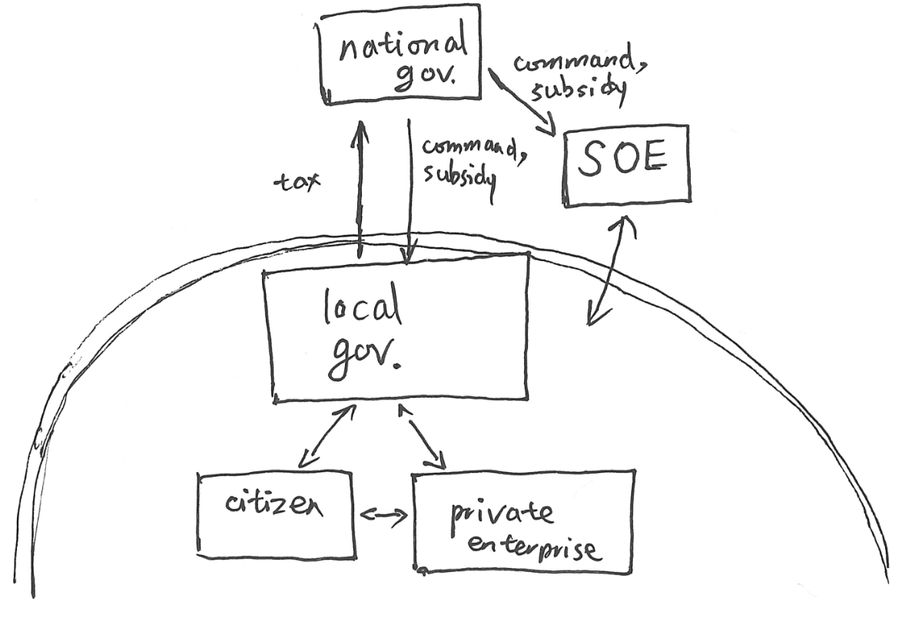
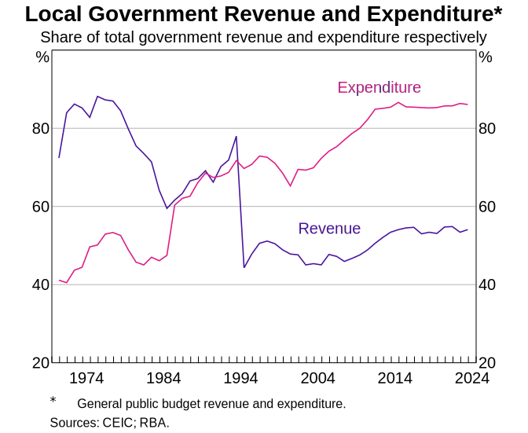
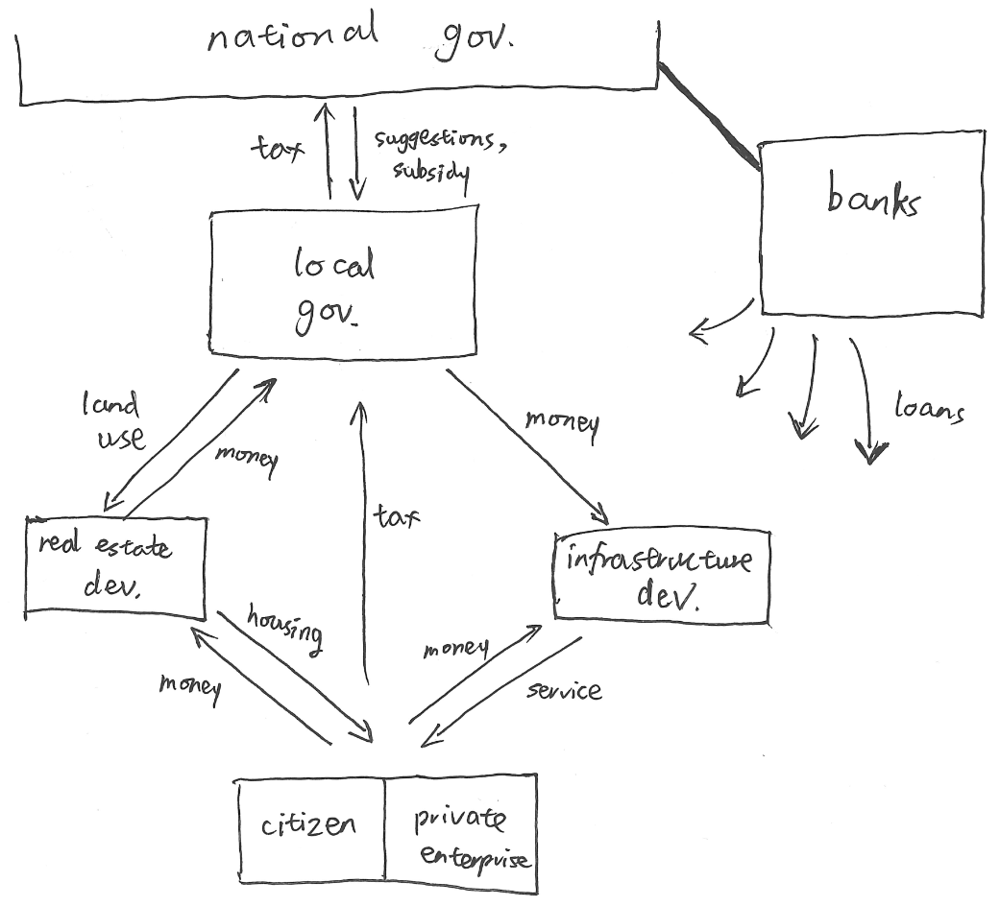
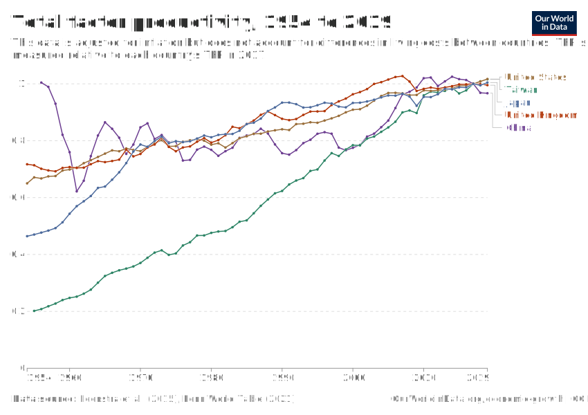
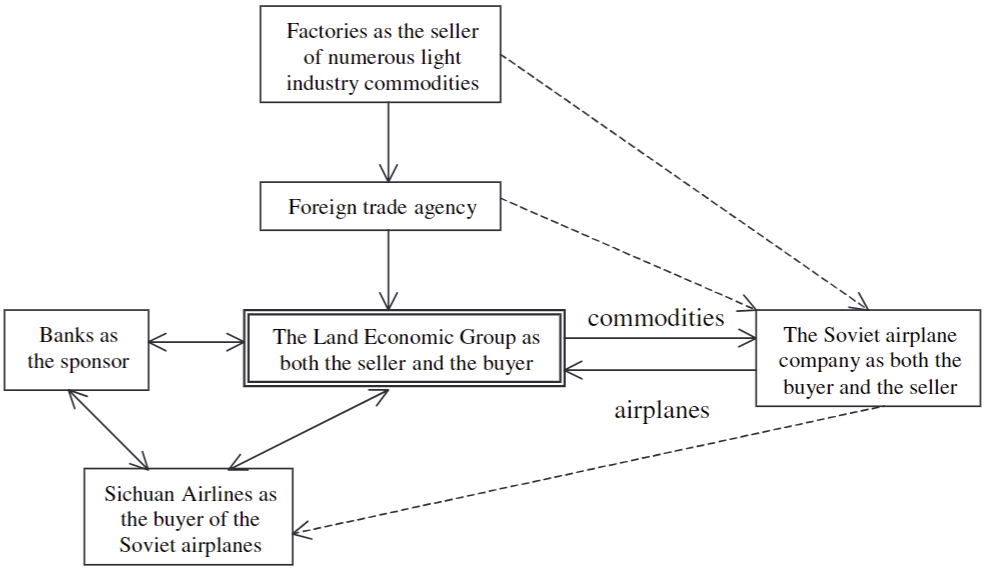
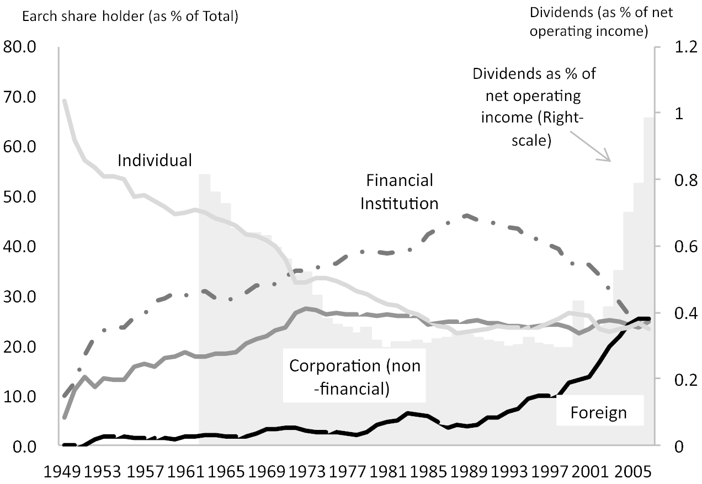

君亟定變法之慮，殆無顧天下之議之也。且夫有高人之行者，固見負於世；有獨知之慮者，必見訾於民。語曰：『愚者闇於成事，知者見於未萌。民不可與慮始，而可與樂成。』郭偃之法曰：『論至德者，不和於俗；成大功者，不謀於眾。』法者，所以愛民也；禮者，所以便事也。是以聖人苟可以強國，不法其故；苟可以利民，不循其禮。
You, my lord, should concentrate your thoughts on altering the laws: pay no attention to the criticism of All-under-Heaven. Moreover, he whose actions rise above the rest will be disapproved by his generation; he whose thinking is exceptionally perceptive will certainly be ridiculed by the people. The saying goes: ‘The ignorant are blind even to the things that have been accomplished; the wise grasp [the matter] in the bud.’ One cannot deliberate the beginnings with the people but can rejoice with them once the matter is accomplished. The Methods of Guo Yan says: ‘He who discusses superb virtue does not conform to the common [opinion]; he who accomplishes great achievement does not consult with the multitudes.’ [The purpose of] the law is to care for the people; [the purpose of] ritual is to benefit undertakings. Hence, whenever it is possible to strengthen his state, the sage does not emulate the past; whenever it is possible to benefit the people, he does not follow rituals.
The Book of Lord Shang, 1.3.
The logic of Chinese economy
- The party controls the state. The party controls the military. The party controls the legislature. There must be no separation of powers.
- The state knows better, because the state aspires to plan over decades, unlike people or companies.
- China deserves to be a center of civilization. Not necessarily better than everyone else, but must be one of the best.
- Never forget national humiliation. (勿忘国耻) The international world is a world of anarchy, and might makes right. Backwards countries are beaten. (落后就要挨打)
- Power comes from technological development. Development is the only hard truth. (发展才是硬道理)
- To be one of the best, China must catch up to the Western countries.
- To catch up, it must develop its economy. Economy depends on scalable industries of material products (实体经济), such as steel and silicon.
- People do not know how they should spend their money. Their money must be extracted to be rolled into investment for the future. The far future is what matters, not the present, and not even the near future. If people are left with too much money, they will waste it.
Combined with the population structure, these principles explain much of the recent Chinese economy.
A brief history of the Chinese economy
The Mao era (1949–1978)
During 1949–1952, just after the communists took power, all of the economy was controlled by the central government. There was no private enterprise. The local governments handed up all tax money to the center. The situation was similar to the War Communism of 1918–1921. The state’s main objectives were to survive: kill off or chase off the last remnants of the nationalists on the mainland, take Tibet, redistribute land, fight (3+5=8) things, fight the Korean War, and stabilize the currency which had been suffering hyperinflation.
Previously, during the decades of war, the nationalist government did what war-time governments often did – print money. This led to repeated hyperinflation episodes and the collapse of 3 fiat currencies. The communist state solved the issue by backing fiat currency with a basket of basic commodities such as grain and steel, and by controlling prices, wages, production quotas, the banks, etc. The currency was briefly denominated entirely in millets. The national budget of 1950 was on the order of 10 billion kg of millet. (Tiejun 2021, chap. 2)
Total central control could not last, of course. As soon as the state power was secure, some power was handed down from the center to the local. State-owned enterprises (SOEs) appeared, since the revolutionary cadres knew how to fight class enemies, but not how to build machines. The structure of economy was roughly as shown:

The central government was responsible for the planning of the macro economy according to a series of 5-Year Plans. The center would send down the commands for production, along with the capital (ores, machinery, currency, etc) necessary for production, and expect the produced capital to be sent back up for reallocation across the nation. The local governments and SOEs would receive the commands and the capital, and be responsible for satisfying the commands under the constraints of the capital.
The citizens were either urban workers employed by the SOE in the work units, or farmers working on farms. The workers in work units performed their work duty, and in return, received food, clothing, housing, and all other necessities of life that they cannot produce themselves privately. The state was in a real sense their parents. Consumption was kept low by the combined system of coupon rationing, state-fixed low wages, and state-fixed high prices at shops operated directly by state-owned enterprises. In this manner, production was maximally rolled back to investment.
As for the farmers, before the revolution, they mainly worked as free tenants under landlords. During the 1950–1952 period, the communists expropriated or killed off the landlords to give their land to peasants, so that they could own the land and pay taxes directly to the state. They also had to sell their produce to the state and used the money to buy industrial products from the SOEs.
The state was the great monopolist–monopsonist (统购统销). Farmers were only allowed to sell agricultural products to the state. The urban workers were only allowed to buy agricultural products from the state. The state had the power to arbitrarily set prices on both ends, and thus exert its will on the economy. Similar to the early Soviet Union’s state, the Chinese state used its mono-power to encourage industrialization, by buying agricultural goods at prices consistently lower than the prices of industrial goods. In this way, the farmers were indirectly taxed extra, and the urban workers were indirectly subsidized extra.
Note that while I say “buy” and “sell”, there was no free market as we understand. There was cash currency, but there were also coupons for grain, cotton, oil, clothes, industrial goods, etc. The urban workers received their wages mostly in the various coupons of agricultural, not cash. The farmers received their trade value mostly in the various coupons of industrial goods, not cash. These give the state many valves and gates on the flows of economy. For example, if the state trades more industrial goods coupons to the farmers for the same amount of farm goods, it would increase the demand for industrial goods, but decrease the income of the industrial sectors.
Soon, however, the farmers were collectivized into people’s communes, starting ~1955. The Great Leap Forward would come, with well-known results.
Seeing Khrushchev denounce Stalin was a terrible blow to Mao, and the failure of the Great Leap Forward made him anxious that he would be denounced in turn. His method was to purify the party and the state ideologically by inspiring the people to become ideologically pure, and attack the impure state organs, the infiltration from the capitalist roaders, the saboteurs, the Five Black Categories, etc. It was a grand pincer attack of the high and the low on the middle. This, and other reasons, led him to launch the Cultural Revolution, a time not known for economic development or free trade.
During his time, the major economic project in China was the Third Front. The state spent a plurality of its budget on industries and infrastructure to the “Third Front of the nation” in preparation of nuclear war. The economic efficiency is unclear, due to how secretive it was, but generally considered to be low for 2 reasons. One, much of its construction was in the mountainous regions, often half-underground or caved into the cliff faces. Two, the project was justified as urgent preparation for nuclear war, yet built up entirely during peacetime, and thus it was not subjected to the discipline of other state departments, the market, or the enemy. Other departments could not restrain it, for who wished to delay an urgent task to make China nuclear-proof? The market could not restrain it, for the market was an organ of the state. The enemy existed in potential only, and never materialized, so the imagination of what the enemy might do resulted in expensive defenses for what could eventuate.
{kind=link}
The social disruption in the cities led to widespread unemployment among workers and school-absence among students. To prevent disorder, the urban youth was repeatedly sent up to the mountains and down to the countryside, so that they could be re-educated by the virtuous peasants. This was not a good time of scientific or technological education or research.
The transition period (1978–2000)
After the death of Mao, there was a brief power struggle, as the Maoist hardliners battled the pragmatists. The pragmatists won in 1978, and China was led by several pragmatic leaders. Class struggle was out, and economic development was in. Stability, not revolution. The first in line was Deng Xiaoping, purged twice during the Cultural Revolution as the “number two capitalist roader”, who summarized the spirit of pragmatism as “it doesn’t matter if a cat is black or white, if it catches mice it’s a good cat” in response to insinuations that his reforms looked suspiciously capitalist.
With the great sufferings under Mao, orthodox Maoism lost legitimacy, so the party needed a new source of legitimacy. Economic development is valuable for individual happiness, but happiness is not enough. One needs struggle too. And thus began the ideology of national rejuvenation. According to this, China deserves a place as one of the greatest nations on earth. Economic development is no longer a matter of selfish happiness, but a great task of national honor. Note in particular that this ideology is nationalist instead of internationalist. In the era of Mao, there was often talk of international solidarity for a global proletariat revolution. Now China and the Han civilization come first.
But that new ideology would still take decades to congeal. The main theme during this transitional period was a great lack of ideology, and a profusion of pragmatic experimentation, and the slogan was for the center to “devolve power and let go of profits” (放权让利). There were still 5-Year Plans, but the party understood that it could not continue to plan and control the economy from the center, seeing the stagnation of the Soviet Union and the domestic economy. Thus began a period of experimental devolution of power and market reform, “crossing the river by feeling the stones” (摸着石头过河). As usual, transitions are complicated, but the overall structure was roughly as shown:

Compared with the previous era, a new player appeared: private enterprises. These turned out much more competitive, and the local governments increasingly did business with them instead of the SOEs. Thus, the SOEs and local governments were no longer tightly coupled together. Instead, the Chinese economy split into two spheres. In the central sphere, the national government closely collaborated with the SOEs. In the local sphere, the local governments, the citizens, and the private enterprises closely collaborated in something quite close to a liberal market economy.
The SOEs became increasingly inefficient in comparison to private enterprises, taking on more subsidies for less work. One common estimate during the period was that “1/3 of the SOEs are losing money as shown on their accounting books. 1/3 are losing money even though their books do not show it. Only 1/3 are actually making a profit.”. The central government finally decided to break the iron rice bowls, and over 28 million SOE workers were fired in the 1990s. Many SOEs were closed down, privatized, or split into many small private enterprises, and the survivors were mostly ones in the critical industries, such as oil and gas, telecom, and electricity.
Previously, urban people took work in the work units, and the work units provided their housing. With the end of many SOEs, mass public housing had to end as well. Thus in the 1990s came housing market reform. One reform in 1992 liberalized the housing market in Hainan, recently designated a “special economic zone”, the biggest laboratory in a nation of economic experimentation. It led to a massive housing bubble during 1992–1993, ended by de-liberalizing policies. The most comprehensive one happened in 1998 (98房改). From then on, most urban people could not expect to get public housing, and had to buy their own. This has a long effect on the Chinese housing market.
When private enterprises began around 1980, there was a new problem: what role should the market play? Full market economy was impossible, because China would stop being socialist, and the SOEs would probably die on the market. No market economy was impossible, because how else would the private enterprises operate if there is no market? They would have to transact with the state. If the state buys steel at a state-designated price for a state-designated quantity, well, that would be just SOE with extra steps. Thus, there had to be a partial market economy.
The solution was the “dual track system”, in analogy with railways (socialist countries love railways). The plan was to begin by creating 2 economic systems: a planned “market” economy and a semi-free market economy. The planned “market” had only state-designated prices and state-designated quotas. The semi-free market did not have fully free-floating prices, but the prices were allowed to vary within a bound. Private enterprises traded on the market, and the SOEs operated on both – they had to first fulfill production quotas by selling on the state-owned “market” at state-designated prices, but could sell any surpluses on the market.
You can probably guess the prices. In the late Soviet Union, there were the long lines at the shops, indicating that the prices were too low. Low-price–low-supply is a common disease of socialist countries, for several reasons: planning triggers the human intuition to be equitable and avoid “usury”; socialist countries always suppress consumption and increase investment, and the low prices are just one tool to extract production from the enterprises; enterprise operators are motivated to keep production just barely hitting the quota, because if they surpass the quota by, say, 2×, they would make things harder for themselves next year, when the quota would duly increase by 2×.
China had the disease too, and the leaders knew it, so they doubled the state-designated prices for many commodities on the planned “market”, and allowed the semi-free markets to have even higher prices – around 2×–3× of those on the planned “market”. This cured both the low-price and the low-supply. But the dual track is inherently unstable, because economies want to be free … of arbitrage. And the economy was choke full of them. The price of coal was 27 yuan on the planned “market”, but 100 yuan on the free market. Barterers carrying sacks of goods crisscrossed China along the price gradients. Since officials had power over a million different ways that hold the two tracks apart, and could loosen it here and there for the right price, corruption was rampant across all levels of the bureaucracy. For example, an official could write a piece of paper (批条) stating that a certain person had the rights to buy 1 km³ of lumber at Hunan on the planned “market”, where the lumber was priced at 300 yuan/m³. As for what that person would do in Zhejiang where lumber was priced at 700 yuan/m³, well, it’s their business.
At the same time, the Soviet economy was collapsing, and as arbitrage was slowly used up inside China, barterers looked north. The railway through Manzhouli endlessly piped light industry goods north and heavy industry goods south. Some old men at border villages still recall the glory days of “bartering watermelons for tanks”.
Within the government, people debated the price problem. It was decided that the planned “market” must be removed in 5 years, allowing all prices to float. The plan was to let the price of goods to rise by 10–20% a year for 5 years, and concurrently raise wages by 100%. In 1988, the plan was set in motion. Expecting higher prices, people immediately began hoarding all commodities, triggering inflation, and the government undid the plan after a mere 11 days. CPI inflation reached 30% in 1989, and the government stabilized prices by committing that all bank deposits would rise with inflation, so that people would feel safe keeping money in the banks.
Around 1990, the reform and opening-up had gone on for over 10 years, and the center was feeling uneasy, especially in light of what had just happened in the capital. There had been much protesting against the inflation, the rampant corruption, and other ills of the dual track system. Hardliners urged a return to the red days of glory, but the paramount leader Deng Xiaoping forced through more reforms.
The main difficulty at this point was a fiscal one: For the first time since the communists took power, the power of the center was shrinking, because the quantity
was decreasing, and if this kept going on, the central government would no longer afford even the military, and they feared China would suffer the fate of Yugoslavia.
How? During the devolution of power in the 1980s, the central government had decided to partly let go the command of not just the economy, but also taxes. The idea was that if the local governments could keep more of the tax money, they would be incentivized to grow the local economy. This was correct, but it meant the central government shrunk in proportion. Every province had a different arrangement, but I will give some examples:
- Let \(x_{t}\) be the tax revenue of a government in fiscal year \(t\). The local government of Beijing was required to pay \(\frac 12 \min(x_t, 1.04 x_{t-1})\) to the central government;
- Guangdong, 1.09× whatever it paid last year;
- Shanghai, 10.5 billion yuan every year, regardless of \(x_t\).
No matter the complexity, the general pattern was that the arrangements favored the local governments, such that they could keep most of the tax revenue growth, not the central government. Thus as the GDP grew, the center shrunk. This was intolerable, thus in 1994 came a comprehensive tax reform. This ensured that all consumption tax and 75% of value-added tax would be handed up to the central government. (Chung 1994) However, as the diagram shows, the deal was quite difficult for the local governments, who had to make-do with much lower tax revenue, but still shoulder most of the expenditures.

The modern era (2000–)
In 2001, China joined the World Trade Organization, and became the manufactory of the world. Economic reform has stabilized, and the Chinese economy settled into a stable and working form. This is depicted in the following diagram.

The central government owns a majority of government revenue, and could apply it for its industrial policy, either directly through policies and subsidies, or indirectly through the state-controlled banks. The banks would provide highly preferential loans to good industries, and vice versa. In this way, the economy could be planned and controlled softly.
After the 1994 tax reform, many local governments had to spend more than they earn in taxes, year after year. This could not continue, and indeed, it would not, because they had one thing that they had a monopoly of – the right of land use. Since the communists took power, all land had always belonged to the state (if urban) or the rural-collective (if rural). Reforms merely privatized the right of land use.
In detail, the Land Management Law was reformed in 1998. According to the reformed version, if land designated as agricultural is to be converted into land designated as non-agricultural, it must be first acquired by the local government. The effect was that the local governments became monopolists of land. City governments would buy up land from farmers on the urban periphery at low prices, then sell them at high prices to the real estate developers, who would then build housing and sell them to private citizens and enterprises at even higher prices. The local government would spend the revenues on funding infrastructural developments for two goals:
- Better infrastructure leads to more valuable land sales, thus more revenue.
- Infrastructure investments leads to higher local GDP, thus higher political-score for the bureaucrats.
China weathered the 2008 great recession by a massive deficit spending of 4 trillion yuan. It was an awkward time for the local governments. The central government controlled the central bank, so they could print the money if it came to it. The local governments could not print money. They were legally not allowed to even borrow money. Thus came the great flourishing of local government financing vehicles (LGFVs). Those are basically shell companies used by local governments to do what economic logic dictated that they must do: borrow money to invest in, and keep the economy growing. The banks are generally willing to loan them money at low interest rates, since these loans are considered very secure:
- The loans are explicitly backed by land as collateral, and land prices are likely to keep going up. The government can be counted on to keep it so, for several reasons.
- The loans are implicitly backed by the reputation of the government, because even though these LGFVs are not legally speaking part of the local government, it is implicit public knowledge among all people doing business in China that they are.
The side effect is a growing “shadow debt”, since those debts, despite real, are indirect, and thus harder to see and account for. The covid crisis and the trade wars with America required even more economic stimulation, making the shadow debt problem worse.
As of 2025, the great tasks of the Chinese economy are:
- Pull the local government debts from the shadows into public legibility.
- Solve the housing problem somehow. Details below.
- Automate the manufacturing economy, since the working population had peaked in 2015, and is only going to decrease.
- Prepare for the end of globalization, and a full split of the global techno-economy into two, centered around China and America. This might be a self-fulfilling prophecy, but the new cold war is already partially fulfilled anyway, might as well go all the way, para bellum.
Two mirrors of GDP
以铜为镜，可以正衣冠；以古为镜，可以知兴替；以人为镜，可以明得失。
Using copper as a mirror, one can adjust clothes and appearance. Using the past as a mirror, one can know the rise and fall of nations. Using others as a mirror, one can see one’s own gains and losses.
— Emperor Taizong of Tang
When Chinese people, especially the leaders, reflect on the Chinese economy and its future, they are constantly haunted by two mirrors, one of the Soviet Union, and one of Japan. I will try to present their economics histories objectively, but I know less about theirs than China’s. My excuse is that I am trying to present their history from the perspective of China, since this essay really is about China, and so, only their histories as viewed from the Chinese point of view is relevant for this essay.
The logic of catchup growth
We briefly recap the Solow growth model. Let \(Y\) be the GDP, \(K\) be the capital, and \(L\) be the labor. Economists have noticed that, roughly speaking \(Y = A K^{0.3} L^{0.7}\) for a certain \(A\), which they call the “total factor productivity” (TFP).
Generally, to grow an economy, there are only 2 methods: increase the raw material of capital stock (land, labor, natural resources) and increase technology with which to use the raw material. In symbols, those two methods are of increasing \(K, L\), and increasing TFP.
The general trend for a rapidly developing economy is usually as follows: When an economy, such as China, is just starting out, it has very little machinery, thus a very low \(K\). It may have a large population, but that population needs to be put to work. Women may be stuck at home, and they need to be put to work too. The population likely needs to be taught how to read and write. Basic medicine would allow more people to grow up into healthy working adults. All these methods increases \(L\).
This large working population would consume some of its production, and spend the rest into investment, i.e. buying and building machinery, increasing \(K\). In this phase, \(K\) would grow faster than \(L\), until a point of optimal \(K/L\), at which point, further growth in \(K/L\) would be uneconomical, since there would be more machinery than what the population can maintain.
Eventually \(L\) would hit a peak after the demographic transition, and from that point on, most of economic growth must rely on the growth in TFP.
In the 19th century, the classical economists – Ricardo, Adam Smith, and John Stuart Mill – all believed that there is a limit to growth. Mill in particular believed that 19th century England was already close to that limit.1 This they believed, because land is where all raw material comes from, and land is not getting any bigger. This is still true. Neither land nor population has been growing significantly in the developed countries, but their economy still manage to grow continuously past these pessimistic expectations because of continuous technological progress that increases TFP.
1The richest and most prosperous countries would very soon attain the stationary state, if no further improvements were made in the productive arts, and if there were a suspension of the overflow of capital from those countries into the uncultivated or ill-cultivated regions of the earth. … The density of population necessary to enable mankind to obtain, in the greatest degree, all the advantages both of co-operation and of social intercourse, has, in all the most populous countries, been attained.
Principles of Political Economy (1848), Chapter 6: of the stationary state
Consider the following chart of TFP of several representative countries: the United States, Taiwan, Japan, the United Kingdom, and China. They can be roughly described as follows:
- The United States has a consistent growth of TFP, the first and second oil crisis and the great recession only tiny blips on the graph.
- The TFP in the UK has collapsed in the great recession, and never grew afterwards. This corresponds to the post-2008 disappointment that is the UK economy. It is certainly not helped by Brexit.
- Japan and Taiwan had similar trajectories, beginning with a period of rapid growth as they caught up in their technologies to the frontier level, followed by slow growth at the same rate as that of the US.
- China is very weird. It has no sustained growth in TFP. This has serious implications for its future economic prospect.

Generally, there are two types of economy. An economy like that of the UK or the US are leading-edge economies. They have remained in the front since 1900, without needing to play catchup. They had to increase their TFP the hard way, by innovating into the unknown. An economy like that of Japan or Taiwan are trailing-edge economies. They, for historical reasons, had fallen far behind. But they had great potential, and could sustain rapid catchup growth by copying from the winners until they reach the leading edge, after which their TFP could only grow at a slower rate, since there is no longer a winner to copy from.
Let’s play through it in detail. If you are a backward country’s economic leader, how do you quickly catch up? Well, since the technological development path has been laid clear by those that came before, you should hire foreign experts – American, German, etc – to quickly train up local experts and import technology. You should extract money from the people and use the money to buy foreign machinery. You should invest money not into local consumer goods, but into the machinery and other forms of capital stocks. People cannot be trusted to give too much money, since they will waste it. The economic experts know how to spend the money better than the people. You should make sure people’s income rises slower than the GDP. People will get rich, but not as rich as the country. People will work hard for a better future for their children, and for the great rejuvenation of the nation.
You should however allow some investment into producing foreign consumer goods, because you need foreign currency. For example, those Germans have awesome machines, but they do not want to gift you for free. They want you to pay. So you need to get Euros somehow. That is, you should practice some amount of export-driven industrialization.
And that, in broad strokes, is the catchup days of Soviet Union, China, Taiwan, South Korea, North Korea, etc. You might notice that it sounds quite authoritarian. Perhaps it’s human nature, but rapid catchup just is often done by an authoritarian government. The cases of Soviet Union, China, and Taiwan are well-known. South Korea was a brutal dictatorship with several bloody coups, until it abruptly transitioned in 1987. North Korea, despite its terrible state of economy now, had been in fact progressing equally as South Korea until the 1970s. And the Japanese economy had been quite planned, too.
But the problem comes when the catch-up days are over.
Compared to catching up, research development and engineering is hard to plan by a big push by the central government. It is much more important if there are many smaller research institutes doing their stuff, and some private companies doing their research, etc. This means a less authoritarian economic policy. The government would control and direct the investment less. Citizens and private organizations would become rich, so that they would start researching.
And humans are picky. They need consumer goods and luxury goods and the finer things in life before they would research on technology. As long as humans are the main producers in the economy (until AGI comes), this is what it comes down to: to push economy forward in a developed economy, money must be wasted allocated on luxury and consumer goods to a high degree.
So the theory goes that there must be the 2th stage. As catchup ends, the nation should transition to a democratic society, with less taxes, with ways for citizens to share the GDP growth, with top research institutes and higher education, and with less focus on industry, infrastructure build-up and capital stock growth, more on infrastructure maintenance, upgrading, and consumer goods. Economists point to Prussia, Japan, South Korea, and Taiwan as exemplars. However, China has reached a different path from its 2 mirrors, neither collapsing like the Soviet Union nor liberalizing like Japan.
The Soviet Union
The history of the Soviet Union in 1918–1970s was very similar to that of China in 1950–1980. Just after the revolution, the state controlled all of economy as it struggled to win the civil war. Once it was won, there was a brief period of kind-of market economy, before Stalin took power.
Stalin, the iron man, was all about getting \(K\) up as fast as possible, which came into good use for the WWII. After Stalin died in 1953, the growth in \(K\) slackened somewhat, but the growth in \(L\) continued, with women joining the work force and general education of the population. Indeed, during the 1950–1970 period, its economy grew roughly 2× faster than that of the US, and Khrushchev’s boast “We will bury you.” might have continued with “… with industry.”. However, its TFP barely grew. This would eventually lead to the stagnation and collapse of its economy. (Krugman 1994)
Why did its TFP stagnate? We do not have hard mathematics, just hypotheses. One hypothesis states that the Soviet economy, being a planned economy, is subject to soft budget constraints. An enterprise with a hard budget constraint would simply fail if its revenue is below expense. But in a planned economy, enterprises are rarely allowed to fail. The state is usually there to pick up the slack. This meant managers are not driven to increase revenue or decrease expense. (Kornai 1992)
There were also perverse incentives. When a factory manager is required to hit a target, he had better hit it. If he has an efficient way to hit it or an inefficient way to hit it, he would choose the way that manages to use up almost all the input. If he manages to use only half the input, next year he would only get half the input, which decreases his safety factor.
In terms of technological upgrades, factories were built up to the 1960s and did not progress much further. They preferred to repair old machines than throwing them out and building new ones that are more efficient. During WWII, some Soviet factories were destroyed, but many were evacuated to the east and survived the war. This contrasts with Japan and Germany, which, after getting bombed to oblivion in WWII, started with a clean slate and built up their industry to the cutting edge.
Finally, much of Soviet technological research was directed by the state, and focused on the military and security uses. They could launch satellites and build thousands of ICBMs, but missed the semiconductor computer industry. The military preferred miniaturizing vacuum tubes, since it was tried and true (as of 1950) and resistant to electromagnetic pulse (reliable in a nuclear war). By late 1970s, it was clear that vacuum tubes was a dead end, and funding belatedly shifted to transistor logic, but Soviet computing never caught up.
The general result of all of these is that the Soviet economy ended up too heavy in the pre-1950 technologies – electricity, steel, tractors, etc – suffering diminishing returns far beyond the point of efficiency. To make matters worse, not only was it lacking in consumer products, it was even lacking in food. Unable to produce these necessities, it had to trade for these on the international market using the one thing it produced that was in demand: petroleum. Gorbachev attempted the necessary reforms, with less military spending, less heavy industry, more market economy, and more consumer goods production. But with the 1980s oil glut, time ran out. (Gaidar 2007)
In China, some still speak of the legends of Mou Qizhong. In 1983, he saw a desk clock in Shanghai that he thought would sell well, so he went to a nearly bankrupt military factory and asked them to produce 10,000 replicas. He then resold these to a department store at a 7 yuan profit each. For this bold act of arbitrage, he was promptly jailed for a year. In 1990, as the Soviet Union was collapsing, Mou sold 500 truckloads of cheap food and electronics to Russia in exchange for 4 Tupolev Tu-154 planes, which he sold to Sichuan Airlines at a profit of around 100 million CNY (about 20 million USD at the time). For this sublime act of arbitrage, he was called “the man who bartered canned food for planes” (罐头换飞机). The real story is of course a bit more complicated, and reading the details, you would see that his advantage was not in realizing there was an arbitrage to be made, but in hashing out a complicated, legal not-obviously-illegal deal involving multiple parties at a time when nobody knew what the laws might become. (Yang 2007)

From the history of the Soviet Union, China has taken these lessons:
- Total planning or control of the economy will lead to economic stagnation and collapse. Therefore, liberalization of economy is necessary.
- Continuous technological upgrading is necessary to push the TFP frontier, for China cannot play catchup and copy for more than a few decades. China will have to reach and stay on the scientific frontier, and must not miss a breakthrough like the Soviet Union missed the transistors.
- Political liberalization will lead to loss of power. Therefore, no more liberalization than necessary. Preferably the enterprises could be kept subservient with guidance, but the party must retain the power to arbitrarily shut down any enterprise, if only as an ultima ratio regnum.
- The party must always believe in its own legitimacy. It cannot allow decadence of its own values. It must believe in itself as the best leader for the great rejuvenation of the Chinese nation.
- Never denounce the past like Khrushchev denounced Stalin. To do so is to fall into Historical Nihilism and lead to self-doubt, hesitation, disloyalty towards the great task at hand, and the final collapse of the party.
Japan
After the Meiji Restoration, in early 20th century, the main Japanese companies were organized into zaibatsus. A zaibatsu is a network of companies controlled by a biological family, made of a core and a large group of peripheries. The peripheries come and go, but the core remains. The core is mainly made of a clique of controlling companies and banks. The controlling companies do not produce anything, but simply managed money, people, stocks, bonds, and other financial investments. The banks offer low-cost loans to companies in the zaibatsu. These zaibatsus were responsible for the majority of Japanese industrialization.
After WWII, the zaibatsus were forcibly taken apart under the orders of the occupiers, but surprisingly nobody was shot in the head. The main method was forcing them to sell their holding stocks to public citizens that were unallied with the zaibatsu family, and replacing the company managers with ones unallied with the zaibatsu families. Most of zaibatsu wealth was frozen for a while, to prevent them from simply buying back the companies. Since this happened to coincide with a period of high inflation in Japan, it effectively made them unable to buy back most of their companies even after the cooling period was over.
After the zaibatsus were taken apart, the Japanese economy was free to be partially controlled by the government. Not “controlled” like in the Soviet Union, but mainly by:
- Business relationships. The government had economic ministries, mainly the Ministry of International Trade and Industry and the Ministry of Finance. They designed policies with extensive discussion with representatives from companies. The plans are not legally binding, but companies that cooperated tended to prosper.
- Window guidance. Japanese companies were mostly funded by borrowing money from banks. The Ministry of Finance actively suppressed competition between banks, and produced regulations that divided the banking sector into many niches: short-term lending versus long-term, nationwide operations versus regional and locally constrained operations, and lending to large corporations versus small business. In return for officially-guaranteed profits, the banks followed the official suggestions as to how much to loan, which industries to loan to, etc. It was all very harmonic. (Lincoln and Friedman 1998)
In one sentence, post-war Japanese economic growth has been export-driven. This is the case even now, 30 years after its bubble burst. Looking at a chart of Japanese export, it would seem that there had never been a bubble-burst in the 1990s.
The Bank of Japan has consistently acted to keep interest rate low to encourage export. The idea is as follows (example given in America, for concreteness):
- Japan is consistently exporting much more than importing. This means more American demand for JPY than Japanese demand for USD. This increases the value of JPY compared to USD, and pushes up USD/JPY to decrease export and increase import. This is just economic negative feedback in action.
- However, if the Bank of Japan sets the interest rate very low, then people would want JPY less, since they could earn more money by borrowing JPY, exchanging it for USD, and save it in an American bank. This decreases USD/JPY.
Starting around 1970, as the Soviet Union ceased to be an economy force that threatened to bury capitalists under a pile of efficiency, it was time to get anxious about Japan. For over 10 years, its GDP had been growing at ~10%/year. Hermann Kahn the futurist (more famous for his other works), always early, published The emerging Japanese superstate in 1970.2 The oil shocks of 1970s lowered its growth to ~4%/year, but this is still double of the ~2%/year in America. Then, with the bestseller Japan as Number One (1979), everyone in America took notice. A trade war seemed imminent.
2 The book had 2 main macroeconomic predictions: Japan would surpass America in GDP per capita in 1990, and in GDP in 2000. Ironically, the 1th prediction was correct… until America overtook Japan again in 2000. It also predicted that earth would split into the two camps of Japan–US–USSR and China–Europe.
In this climate, a series of agreements were signed. The most famous was the Plaza Accord of 1985, with which several governments agreed to change their exchange rates. For Japan in particular, this meant a sudden increase in USD/JPY, which endangers its economic growth. The Bank of Japan quickly decreased its interest rate from 5% to 2.5%.
A complex series of events then happened during the 1985–1995 period, resulting in the bubble economy. (Kang 2018; Noguchi 1994) To prepare the ground, several money faucets turned on:
- The lowered interest rate made it cheap to borrow money from banks.
- The Japanese households continued to save over 50% of assets in bank saving accounts.
- The Foreign Exchange Law was reformed in 1980, allowing freer cross-border capital flow.
- Wages remained low in general, as corporations persuaded labor unions to keep wage demands low on the grounds of maintaining international competitiveness. This allowed corporations to keep more money for investment.
- The Japanese state issued less bonds to decrease deficit, leaving more money out of government hands.
The net result was a large amount of money that could flow quickly here and there. Such liquidity is not a bubble in itself, but enables bubbles to form and blow up quickly.
A special feature of Japanese capitalism is keiretsu. Somewhat like a zaibatsu, except without biological families involved, a keiretsu is a group of banks and companies that closely cooperate over many years. The companies, as explained previously, were mainly funded by borrowing from banks. The bank–company relationship was very strong, often lasting over 30 years, and based on mutual trust. For each company, the largest provider of bank loans was called its “main bank”, which cared for the company paternally. It would usually hold a lot of the stocks for the company, may send its employees to serve as directors of the company, be responsible for monitoring the company, and try to rescue the company if it is distressed. As a consequence of this close collaboration, bank loans were not based on a careful credit rating based on predicted future cash flow, but backed by land.
Another feature was extensive cross-shareholding, meaning that the banks held a lot of stocks from the companies, and the companies from each other, and the companies even from the banks. This promoted mutual cooperation. Such a structure was preferred by the management, since by keeping a large block of shares off the open market, it made their jobs more secure, safe from the fickle moods of the market, hostile takeovers, etc, so they could enjoy the quiet life.
The evolving ownership structure reveals this development. Immediately after zaibatsu-breaking, companies were mostly shareheld by individuals. This gradually decayed, replaced by banks and other companies. The 1985–1990 period saw a sharp rise in banks owning companies, followed by the bust as the bubble burst. Subsequently, the majority of corporate ownership went to foreign institutional investors – quite symmetric to the concurrent growth in yen carry trade.

In this special setting, positive feedback loops occurred that created the double explosion of land prices and stock prices.
As land prices increased, it increased the value of land as collateral, enabling companies to borrow more money, and banks to lend more money while satisfying the reserve requirements. Companies could use the borrowed money to buy more land, betting that it would rise more. Rising land prices also increases the book-value of companies and make their cash flows appear positive.
As stock prices on the open market increased, it increased the value of all stocks, including those off the open market, held mutually within the keiretsus. Since stocks were assets, this increased the book-value of everyone in a keiretsu. In accounting terms, this increased the asset of everyone. This then means that they could increase their liabilities too, that is, they could borrow more money, with which they can buy more stocks, betting that it would rise more.
Of course, the pure form of speculation, of buying more X to sell later, was in play as well. But the above 2 were specific to the Japanese bubble economy, enabled by the Japan-specific keiretsus.
The end of the bubble economy came in 1990 when the stock market and the land price crashed. As good assets and debts turned bad, it spilled out from land and stock market to the general economy. The GDP of Japan dutifully entered the Lost Decades, though inflation-adjusted, it did continue to grow, but the growth rate never returned to the previous level.
The lessons that China has taken from Japan are more contested. All agree that China has to somehow avoid the fate of Japan, but how?
- Some would look at its history of bubble economy and argue that the Chinese housing bubble would lead to a lost decade, and urge the government to finally end the housing bubble.
- Some would point to the Plaza Accord and argue that the US will play dirty to beat down any global competitor, and urge the nation to build a China-led global order in opposition to the US-led global order.
- Some will point to its population crisis (and that of South Korea) and urge rapid automation of the economy before the World’s Factory could no longer fill its ranks with human labor.
- Some argue that the analogy is flawed, and the overall story holds no big-picture lesson for China, even though there are details that hold small lessons for specialists.
This confusion is exacerbated by the fact that the Chinese people have great confusion as to how they emotionally feel about Japan, due to a tension in the new ideology of national rejuvenation. Japan is good, because it is perfectly positioned to be a great trading partner for China, and trade is good, because Chinese economic growth relies on trade. In most years, China has been Japan’s largest trading partner, and Japan has been China’s 2th largest trading partner following the US. Japan is bad, because it invaded China multiple times in the century of humiliation, and one must never forget national humiliation.
The Chinese stock market
People are often puzzled by the fact that, despite the roaring economy, the Chinese stock market is a very bad investment. It has wild moments of bubble and collapse, but barely anything happens over the long term. During 2000–2025, the Shanghai Stock Exchange (SSE) composite index grew 2×, but compare it with the SP500, which grew 4×. Indeed, it is starker to compare it with the Chinese GDP, which grew 20×, or the American GDP, which grew ~3.5×.

In America, the stock market slightly outperforms the GDP. This is because American GDP mainly comes from private companies, and most of the best private companies are on the stock market. So, the stock market outperforms the total economy, because the worst companies are not able to appear on the stock exchange. In China, the stock market does not work like this at all, because the government cannot allow it. The stock market contains both private companies and SOE, but in both cases, the government does not want their stock prices to rise.
For the private companies, they must not escape the control of the state. All companies are legally required to establish branches of the party, and they grow with the company. For example, Alibaba and the Ant Group had more than 200 party branches with 7,000 members in 2018. As soon as one company grows large, these branches would allow government to assert power over the company. Not direct control, as the party knows that direct control of the economy will lead to economic collapse, but some control they will assert. If it still does not submit, then it will be forced. Jack Ma, the CEO of Alibaba, was forced into retirement, because he was too rich and did not submit to suggestions that he donate more money, or sell off some of his voting stocks for the company. If he would not let go of his company and retire rich on his own terms, he would be forced to.
Indeed, Mou Qizhong was an interesting case. After bartering cans for planes, he bought 2 direct broadcast satellites (GALS-1 and GALS-2) from Russia in 1995, the use of which he resold to Asian broadcasting companies. However, he was getting too powerful and interested in politics for comfort. He was investing in schemes such “building a northern Hong Kong in Manzhouli”, and proposing grand plans like “Project 765” – Each SOE would be given 76500 USD in start-up capital to achieve institutional transformation in 4 years. Such projects are so grand, the state could not tolerate a mere private enterprise to undertake. And the government finally stepped in to end his career. He was sentenced to life in prison for “foreign exchange fraud” after a 1-day trial in 1999-11.
If the private companies depend mostly on the stock market for financing (like American companies do), then it would be bad for the state. The state wants companies to get funds by borrowing from national banks, because then it is easy to control who wins and who fails. If private companies get funded by selling stocks on the market, it would mean that the state cannot easily control who gets money and who does not get money. Such loss of control is bad. In jargon, the government wants private companies to do debt-financing, not equity-financing.
Therefore, even if a private company can grow in value, its stock prices often does not grow. The state would make it so. If people learn that private company stocks do not grow over time, then people would learn that they should not buy and hold private company stocks. Then private company stocks would not be popular. Then they would have to borrow from national banks. This is not a dysfunction of the market. It is working exactly as designed.
The situation is a living paradox (or “historical dialectic” as the ideologues have so helpfully clarified). The party needs the private companies to be strong, because the fate of the Soviet Union has shown what happens when all enterprises are monopolized by a single entity, the state. The party needs the private companies to be weak, because a strong private sector leads to loss of control, and the fate of the Soviet Union has shown what happens when the party loses control of the economy. It may be a living paradox, and yet it has been living for decades, and may continue indefinitely. People have marched on hoisting far worse paradoxes, and indeed, will die of perfect consistency.
{kind=link}
What kind of control over economy does the party want? Not total control. This would lead to collapse. Not zero control. This would lead to collapse. Soft control, in the sense of industrial policies. The party would designate certain industries as good, and others bad. Companies are free to work in any industry they want, but if they join the good industries, they can expect tax breaks from the government, easy loans from the banks, fast paperwork from the bureaus, cheap real estates, and more such good winds that make their ships sail fast. And vice versa. A company, if it knows what is good for it, should carefully consult the party branch within it, to make sure they are not sailing against the winds.
As for the SOEs, they are allied with the state, and so they operate and think like the state: They do not want to make the people rich. Rich people would misplace their money. Profits should not be returned to the people, but returned to more investment, more machinery, more productive power, so they can build more, produce more, profit more, buy more machinery, build more, and so on. Growth for the sake of happiness is meaningless without national power.
The state companies would really want people to buy their stocks, because that is taking money from people, money that people do not know how to spend. The state companies would spend them more wisely – in more productive power. People would simply waste the money in consumption, or on useless speculations on the stock market. So, once a year or so, the government put up an act and make it seem like the stock market will finally rise, the state companies issue more stocks, people buy the stocks, and then predictably lose money. This is not a dysfunction of the market. It is working exactly as designed.
Buying state companies on the Chinese stock market is basically paying extra taxes.
Okay, so not stock market. How about the other markets? For the people, there is basically no money to be made in saving. The bank deposit rate has stayed mostly flat at 2%/year since 2000. Government bonds yielded 3–4.5%/year, trending down to 2%/year now. As for the corporate bonds, it is tightly regulated in China. Over 90% of corporate bonds can only be traded by banks and funds, and not for individual citizens, and over the years, this only got higher, such that it may reach 100% soon. While day-trading stocks is a national sport, day-trading bonds is so rare that I didn’t know it was possible in China, before I began researching for this essay. The benefit of having funds instead of individuals is that there are far fewer funds, each with much more money, more organizational structure, and more paper trail, and so they are easier to see for the state. They are more obedient too, since they have more to lose.
For the corporations, well, they cannot borrow from the people via the corporate bond market, which is small, so they had to do it through the banks or the funds. And the government directly controls the banks, and indirectly the funds via regulations and implicit threat of escalation, the government can direct where the money should go, the terms and conditions of it, to promote industries that deserve the capital, and shrink the industries that do not.
And finally, the foreign market is rarely invested in. The Chinese government enforces stringent capital control, because it has picked these 2 sides of impossible trinity: a fixed foreign exchange rate and an independent monetary policy, so it must necessarily give up the free movement of capital. Indeed, this explains why China has banned most of cryptocurrency, and why each citizen is only allowed to convert to foreign currency up to 50000 USD per year. As a result, Chinese citizens and funds do not invest in foreign markets to a large extent, and vice versa. Contrast this with Japan, where there is a huge yen carry trade due to the near-0 interest rate and free capital flow. Japan have picked these 2 sides: an independent monetary policy and the free movement of capital, allowing its exchange rate to float. Although fortunately, the near-0 interest rate monetary policy, meant to prevent a domestic deflationary spiral, generally keeps USD/JPY low, which is consistent with their policy of “just keep exporting”.
The Chinese housing market
The Chinese economic boom has benefited the citizens, who did get richer. Disposable income grew at roughly the same rate as the national GDP, of 6–9%/year. But people cannot spend down all that extra income. Rich people save more. (Dynan, Skinner, and Zeldes 2004) Even before the boom, Chinese people were already saving a lot, and as they grow richer, they could save even more. But where do they save their money in a way that can keep up with inflation at all? Not under the mattress, or in a bank, or in the stock market, or the bond market, or the foreign market. Just one place left: the housing market.
Indeed, if there’s something growing faster than the Chinese economy, it is the Chinese housing market. In 1998, the Chinese government privatized the housing market, and since then, the price of housing has grown very consistently. This is despite many warnings of imminent bubble collapse, and despite agreement by all economists and paramount leaders that housing is fundamentally not a growth industry – after all, housing is just another machine that produces something economically useful, but not more than that. A car produces travel. A house produces living space. A camera produces photos. A used machine is priced lower than a brand new one. And because of learning curve effects, the price of even a brand new machine ought to decrease over the years. And yet, the opposite has been true. The price of an apartment, even one that is being lived in, mostly goes up, faster than GDP.

Indeed, it is a grim comedy that over the years, often the government would say it wants to make apartments cheaper, and yet keeps allowing it to rise, and whenever there an actual fall occurs, immediately implements policies to make it rise again. What explains it? The short answer is that housing plays several roles that pull it in conflicting directions.
From the simple industrial point of view, a house is just a machine for living in. As a machine, its price should go down as companies learn to build it faster and cheaper. Indeed, the Chinese construction companies have been producing so much concrete, steel, and housing, that they have utterly overproduced for the Chinese market. The supply has so far outstripped demand that Chinese construction seeks markets abroad, mainly in Africa and South America, where there is much greater demand for everything infrastructural – housing, electricity, subway, etc. So, by the basic laws of economics, the price of housing ought to fall, like the price of water, rice, solar panels, batteries, cars, and every machine good and proper in this world.

A house is a machine for living in. Baths, sun, hot-water, cold-water, warmth at will, conservation of food, hygiene, beauty in the sense of good proportion. An armchair is a machine for sitting in and so on.
Toward a New Architecture, Le Corbusier
From the citizens’ point of view, since they have no other good investment tool than the housing market, its price should keep going up as China becomes richer, else people would be very upset and cause “social instability”. Indeed, brief falls in housing market reliably create social unrest, quickly followed by the government making new policies that show its commitment to unwavering rise in housing prices. Thus is social stability restored for another year. And this is despite the paramount leader of China repeatedly saying “Houses are for living, not for speculation.”, because when it comes down to it, social stability always triumphs over ideology.3
3 Why have not people caught on to the contradiction? I have no idea. Perhaps, as the Chinese says, “Your butt determines your head.” (屁股决定脑袋), meaning that your sit-uation (where you sit) determines your thinking. It is hard to get a human to understand logic when their property value depends on them not understanding it. So maybe people, if they pause and think about it, would agree that, yeah, logically speaking, if the paramount leader says that “Houses are for living, not for speculation.”, then the government should not be propping up the housing prices. But logic should not be an obstacle for another decade of prosperity. After all, logic is sublated by dialectics, and “All that is actual is rational.” (存在的就是合理的), and “The words are hard and dead-fixed, but people are supple and living.” (规矩是死的，人是活的), and I can keep quoting all those fine flowers of classic Chinese wisdom that justify everything and explain nothing.
For sure, some people are too poor to ever own a home, but enough of the populace either own a home, or have relatives who own homes, that the point of view of those proletarians – who would benefit from a precipitous decline of housing prices to the minimal level of production-cost – is simply not relevant.
From the local governments’ point of view, housing is how they are funded. The 1994 tax reform means most tax revenue is taken by the central government. They were not even allowed to issue bonds until a 2015 reform. The most valuable asset they have is the monopoly on land use rights. Inevitably they want housing prices to keep going up.
From the real estate developers’ point of view, they have long come to expect housing prices to keep rising, and plan their finances accordingly. Specifically, they borrow a lot from banks in order to fund their next construction project, which they expect to sell out quickly at high prices, which can then fund the next one, and so on. If the rising prices falters, it can threaten to break the cash flow, even cause bankruptcy.
From the banks’ point of view, their primary objective is to support the operations of the government by providing liquidity where it is needed, so they cannot complain. They do not want to second-guess the wisdom of the loans, or give a low credit rating where the government expects a high credit rating. It is mostly alright, anyway, because banks know that the government really does not want banks to fail. Indeed, the only major case of bank failure in China has been the collapse of the Hainan Development Bank in 1998, a belated casualty of the Hainan housing bubble during 1992–1993.
From the bureaucrats’ point of view, rising housing prices is the most assured path towards career advancement. The center rewards those who increase the GDP and keep stability. If housing prices drop, it would hurt citizens’ investments and create instability, even protests. Conversely, to increase the GDP, the most assured path is to continue what has been working so far: build infrastructure and sell housing. Rising housing prices would then come naturally, since better infrastructure increases the value of land.
The Chinese bureaucrats climb the career ladder – of which there are 27 steps – according to a kind of political scoring system. The low level bureaucrats are rewarded for efficiency, obedience, and general competence. At high levels, especially the city and provincial levels, the bureaucrats are rewarded mainly for GDP growth and social stability.
For developing GDP, the bureaucrats could pick between a sure gain of GDP in doing what has worked reliably, or risk something new. But risking something new is … risky. Most scientific research projects fail to reach production. A new technology might be a deadend like miniature vacuum tubes. And one big failure can end the whole career. Faced with this choice, bureaucrats play it safe. They only risk something new (like the recent wave of datacenter buildup) if it’s what the higher-ups demand, so that if it fails, they can simply say “We did not take on risks unnecessarily, but only risks necessary for the great rejuvenation of the nation.”.
There is also a perverse incentive of “heads I win, tails you lose” involved, as they know that the central government would not allow local governments to go bankrupt, so they are free to raise more debt to fund more development, even inefficiently. They are even more safe from adverse consequences if debt is raised indirectly via LGFVs, since it is not legibly connected to their own persons. Another layer of insulation is that when inefficiencies finally bite, they might have already been promoted from the post, and they could go “after me may the flood come” and blame it on the fall-guy sitting where they used to sit in. Since China had much real use of infrastructure, despite all these perverse incentives, most investments had been efficient, but at the limit, this results in stark inefficiencies of empty airports or railway stations.
Despite all these forces pushing up housing prices, somehow everybody expects this to end someday (though few want this to end soon). The dangers of rising prices are many:
- Expensive housing makes young people marry later. Chinese culture basically requires the man to buy an apartment before even marrying. Thus, expensive housing → later marriage → fewer children → weaker economy.
- Young people borrowed a lot of money to buy housing, then do not have much money to buy other things. This weakens the economy. It has become particularly acute recently as the government attempts the dual circulation strategy, preparing for a world where growth must rely on domestic demand more than export.
- Housing has become too big to fail. This brings all the perverse incentives with it. The collapse of the Evergrande Group was a particular example, where a huge real estate developer reasonably bet on it being too big for the government to allow it to fail, took on too much debt, then failed.
- Using housing as investment is strictly worse for how capital is allocated across the economy, because the stock market contains every kind of company, but housing is just housing.
The last point bears more explanation.
If the US stock market contains just stocks in one sector, like oil, then America would have the same problem. However, the US stock market contains every sector from oil to computer to the military, so they have a system that adapts as each new technological breakthrough sweeps across the economy like a wave. When a new breakthrough, such as electric cars, first arises, the rate of profit for the relevant industry would rise abruptly. But as more and more companies take it up, it becomes old news, and the profit rate will fall from the heights of Schumpeterian rent down to merely keeping up with inflation. They have discovered all the good ways to make the thing and there are only tiny incremental improvements. People who are okay with more risk and more reward will just sell these stocks to people who are risk-averse, and buy stocks in new companies in new growing sectors, like AI.
In this way, a diverse market allows efficient capital allocation across the economy, matching capital owned by risk-averse people with capital needed by boring industries, and capital owned by risk-taking people with capital needed by exciting growth industries.
Now in China, the housing market is too dominant, and this distorts capital allocation, into pouring capital into building infrastructure, steel plants, machine plants, houses, etc, far more than what would be efficient. At the limit, this results in the absurd ghost cities. Making misallocation worse is the aforementioned moral hazard, where bureaucrats keep building infrastructure and housing even when knowing it is inefficient.
Unlike the stock market situation, where there seems little motivation for the government to make it ever grow consistently, the government does want to solve the housing situation, and soon. There is however no consensus on how it might be solved, though generally agreed to be some combination of the following:
- In the transition period, force the large real estate developers to reform their corporate structure, so that they would be less debt-funded. Developers are to be encouraged to downsize or go bankrupt, since the housing is already oversupplied, and with population ageing, will only get more oversupplied as time goes on.
- Ensure developer competition with methods like open land auctions and nationwide land title registry. This would probably bring down the housing price, however.
- Culturally, make it more acceptable for people to not own housing.
- Concurrent with the above cultural policy, many economic policies and regulations were written with the assumption that most people are living in housing they bought, and that people renting housing are either about to, or aspiring to, own their housing. Reform these, so that indefinite renting is a smooth experience for people.
- Accept on the macro policy level that people are going to keep pouring into the big cities and hollow out the countryside and small cities, and instead of trying to tell people to return to the quiet life and develop their hometowns, embrace it. Zone land for residential development in proportion to projected urban population. In particular, zone more land for the growing cities, and zone less for the shrinking cities. It is more legible, with less room for political shenanigans, to simply predict future population movement and then multiply by a proportionality number, compared to arguing about how many people should be in the coastal cities versus the countryside.
- Legalize and support Real Estate Investment Trusts. These trusts would play similar roles as the LGFVs, but legible and regulated. It would separate the local government from real estate development. The benefit would be that the government’s legitimacy would be unharmed if a trust goes bankrupt. The cost would be, once again, less control by the state and a dangerous rise of market autonomy.
- A threshold property tax. This provides the local governments a constant stream of tax revenue, and decreases the profit in speculation. The tax would be levied only on housing area above a threshold, commonly suggested to be ~140 m².
- Tax reform, so that the central government takes less tax revenue from the peripheries. This goes against the power and authority of the center, however.
- Liberalize or even remove the Hukou system. The Hukou system was a no-tech method for making a billion people legible. The new information surveillance systems have obsoleted it. Removing it would allow people to flow more freely, allowing more efficient capital and labor allocation.
- Liberalize the stock market so that the housing market is no longer the only place where people can get rich. This goes against the basic logic of the Chinese economy, however.
It is a hard task with multiple contradicting constraints, but China seems confident in taking it on by experimenting multiple methods at multiple cities. China is big enough to run many experiments in parallel, and contain many contradictions indefinitely.
Metadata
This essay was initialized by sticking together some mini-lectures I have given to friends on Discord during 2023–2024. The recent Dwarkesh Patel podcast with Victor Shih finally gave me the motivation to polish them up to post on the open Internet.
I originally intended this to be a quick blog post, so it is distinctly under-researched, and large chunks are just pulled out of my brain that I am not bothered enough to find citations for. As I kept trying to polish it, it grew too long to be a blog post, so it is now a proper essay, but it is still uneven, kind of repetitive, and lacks citations to really satisfy my wish for completeness. Still, an essay it is.
Comment thread